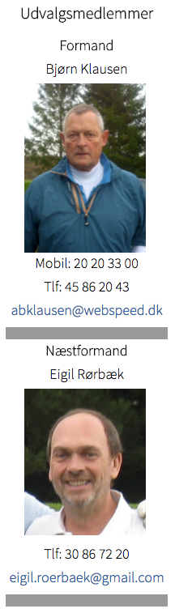

<div class="pages">
  <div data-page="golfvaerter" class="page navbar-fixed toolbar-fixed" >
    <div class="navbar">
      <div class="navbar-inner">
        <div class="left">
          <a href="#" class="link back icon-only"><i class="icon icon-back"></i></a>
          <!-- <a href="#" class="back link icon-only"><i class="icon icon-back"></i></a> -->
        </div>
        <div class="center">Golfværtudvalget</div>
        <!-- <div class="right"></div> -->
        <div class="right">
        </div>
      </div>
    </div>
    <div class="page-content" style="padding-top:45px;">
       <div class="content-block">
          <p>Golfværternes primære opgave er at sikre, at spil på Hornbæk Golfklubs bane sker i henhold til de til enhver tid gældende regler.
            <br /><br />
            Udover at kontrollere om gæster har betalt korrekt GreenFee, sørger Golfværterne for hjælp og vejledning til vore gæster og medvirker som startere i weekends når der er ekstra pres på 1'Tee.
            <br /><br /> 
            Hjælp og anvisning om hurtigere flow på banen er en anden naturlig opgave for Golfværterne. Endelig forestår vi salg af mad og drikkevarer for CaféIngolf under turene rundt på banen.
            <br /><br /> 
            Golfværtudvalget rådgiver ligeledes Bestyrelsen i spørgsmål om udnyttelse af banen og fremme af spillet.
            <br /><br /> 
            Læs Golfværternes Kommissorium <a href="http://hornbaekgolf.dk/images/Baneservice/Golfvaert_Kommisorium_2016.pdf" class="external" download>HER</a>
            <br /><br /> 
            <a href="https://calendar.google.com/calendar/embed?src=99k197iea2dj56p6hdv6kv9shs@group.calendar.google.com&ctz=Europe/Copenhagen&pli=1" class="external">Klik her for link til Golfvært Kalenderen.</a></p>
          <br />
          
        </div>
    </div>
    </div>
    </div>
  </div>
</div>
